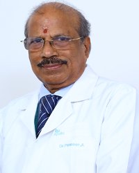

NEUROLOGY HOSPITAL
NEUROLOGY HOSPITAL
| Home | Patient & Visitors | Service & Specialities | Physicians | About | Contact Us |
Neurologist
|
Dr.Amitabh Ghosh 
MBBS, MD(Med), MRCP(UK), CCST (Neurology,UK,FRCP(London), FRCP(Edin). Neurologist Apollo Gleneagles Hospital Limited 28 Years of experience English,Hindi,Bengali 626 Recommendations MON-SAT | 01:00 PM-03:00 PM Awards and Achievements Best Audit Award in the Northwest of England Ophthamology audit Meeting, UK, 2000. Silver Casket in Pathology and Microbiology. National Science Talent Search Scholarship, Government of India. |
|
Dr Geetha Lakshmipathy 
MBBS MD general Medicine, DM Neurology Neurologist Apollo Hospitals Greams Road Chennai 22 Years of experience English,Hindi,Tamil 261 Recommendations SUN | 02:30 PM-04:00 PM Show More Research and Publications Presented 7 papersQualification MBBS MD general Medicine, DM NeurologyWork Experience Working in Apollo Hospitals since last AssignmentCertifications & Professional Memberships Convenor and Examiner for DM Neurology and MCH Neuro surgery in Tamilnadu Dr MGR Medical University Indian Academy of Neurology American Academy of Neurology Indian Medical Assoiciaton
|
|
Dr Panneer A MBBS, MD Neurologist Apollo Hospitals Greams Road Chennai 30 Years of experience English,Tamil 692 Recommendations MON-SAT | 09:00 AM-01:45 PM, 01:45 PM-06:00 PM Research and Publications RUNNING OR CURSING EPILEPSY- Neurological society of India Annual Conference-1987 APHSIA CONVULSION SYSDROME- Neurology society of India conference -1990 CLINICAL APPRAISAL OF RUNNING or CURSIVE EPILEPSY- World congress of Neurology-1989 PRELIMINARY STUDY OF MIGRAINE WITH STUPOR and PYREXIA - International Headache congress 1991 MIGRAINE COOULD BE A DEATH TRAP - International Headache congress 1995 INTERESTING HEADACHE NSI, Calcutta 1997. DECEPTIVE HEADACHE NSI, Calcutta1997 SEROTONIN SYNDROME NSI, Calcutta 1997 DECEPTIVE Headache International Headache congress 1997 SEROTONIN SYNDROME IN POLYDRUG Users IH CONGRESS 1997 |
| Book Appointment | Location | Our Provider | ConditionsWe Treat | Test & Traetment | Stroke Center | URMC Neurology |
| Contact NCT Hospitals in India International Hospitals Apollo Clinics Reach Hospitals Apollo Cradle Phone: 416-860-7554 Email: appoloadmin@neurologycentr.com | Hours of Operation
Monday - Friday 8am - 6pm
Saturday 8am - 3pm
Service: 24*7
Connect:
|
| © 2018 Neurology Centre of Toronto | Privacy Policy | Terms of Use | Web Credits |